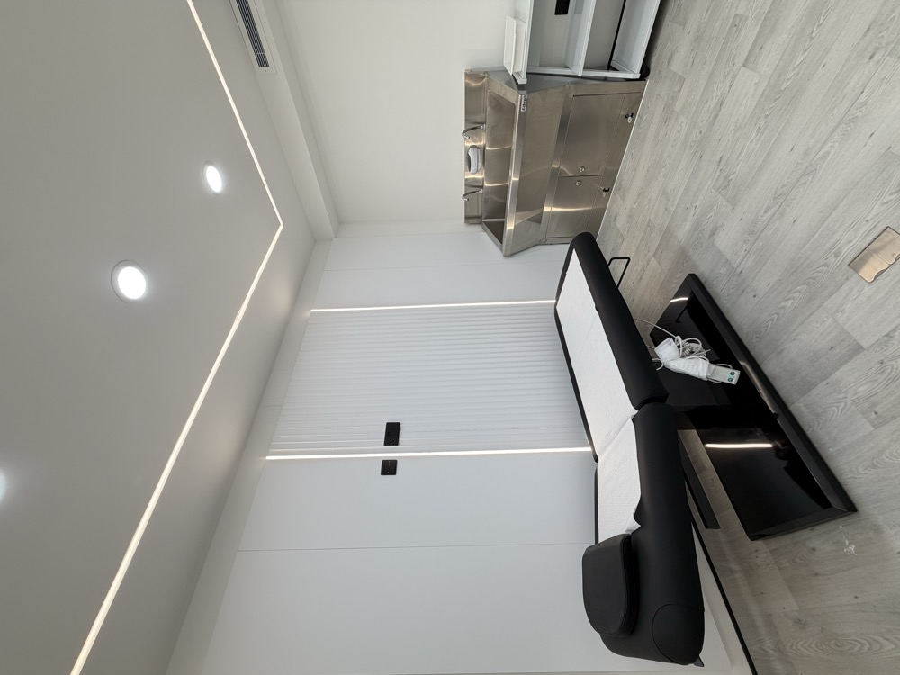

Sculptra
PLLA product science, tissue-response principles, patient assessment and treatment-planning considerations.
Study Sculptra, Olidia and Radiesse together through product science, facial assessment, treatment planning, safety and realistic patient expectations.
Next date confirmed on enquiry

PLLA product science, tissue-response principles, patient assessment and treatment-planning considerations.
PLLA principles, product distinctions, assessment and safe professional decision-making.
CaHA material science, treatment-planning principles and aftercare considerations.
Consultation, facial assessment, expectations, contraindications, complications awareness and professional scope.
“Liquid Face Lift” describes the non-surgical aesthetic theme of the masterclass. It does not promise a surgical-equivalent facelift result. Exact duration, date, product versions, entry requirements, practical scope and assessment are confirmed before enrolment.
Tell us your background and goals. We will confirm eligibility, dates, delivery format and the next step.